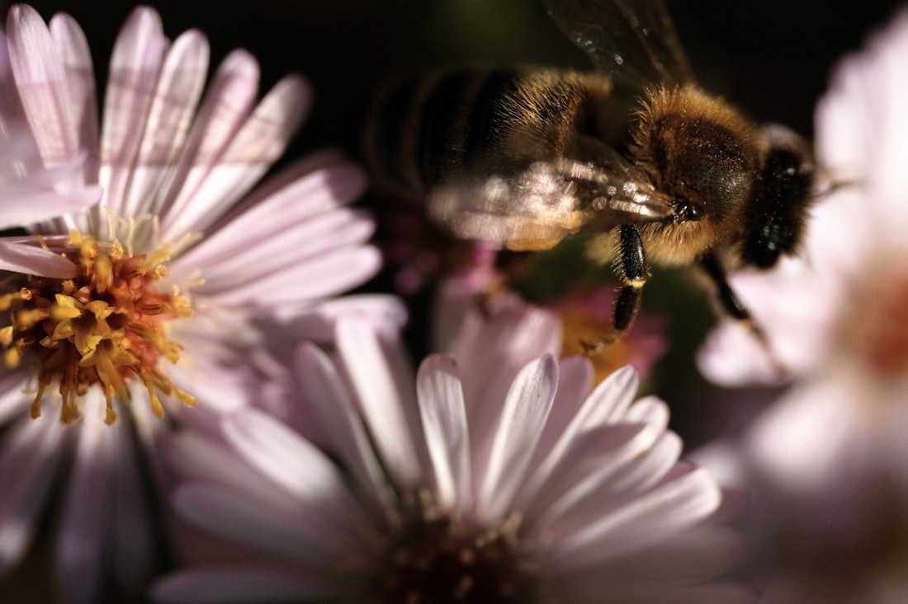
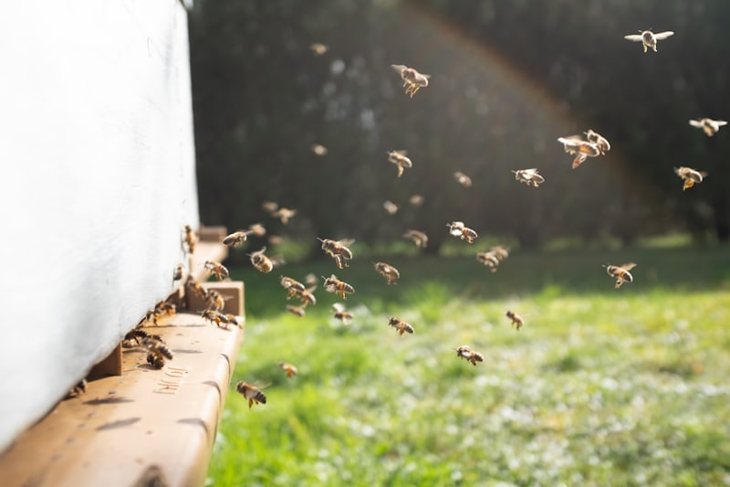
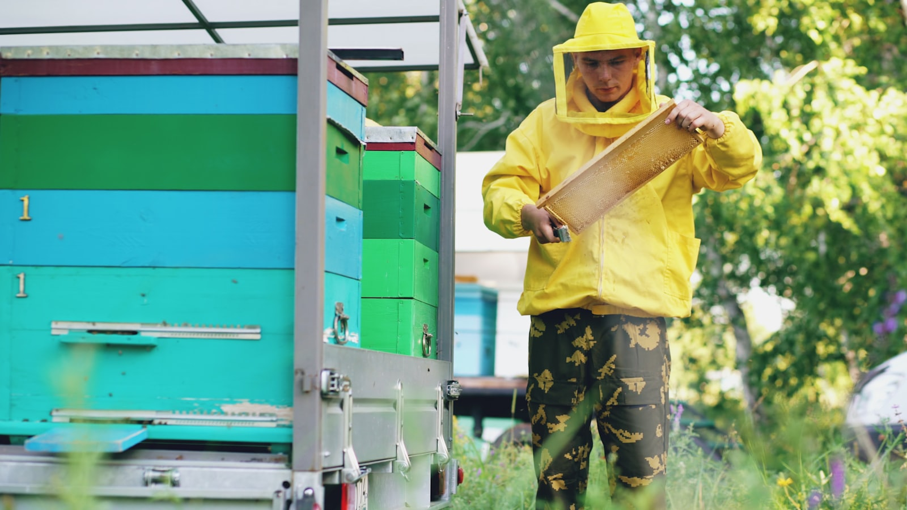
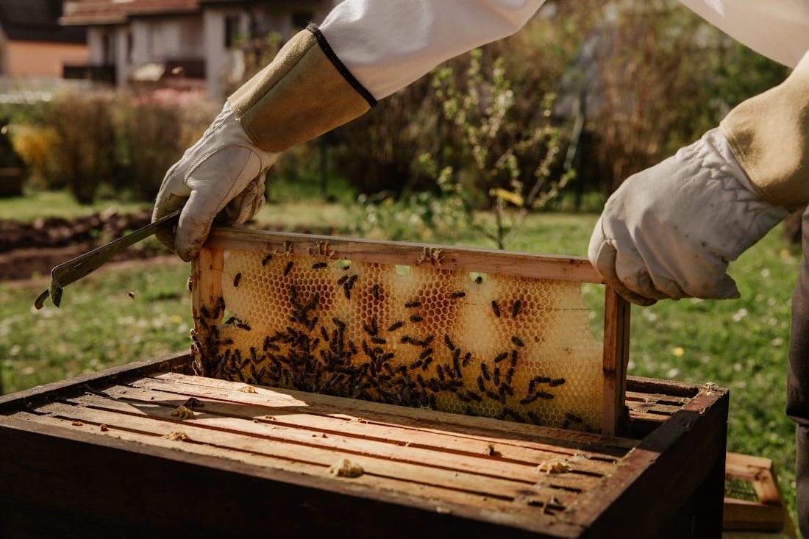

Arıcılığın geleceğini birlikte inşa ediyoruz.
Apikültür Vakfı; arıcılığın bilimsel, çevresel, ekonomik ve kültürel değerini geliştirmek, bilgi ve eğitimi yaygınlaştırmak ve gelecek nesilleri arıcılığın geleceğine hazırlamak amacıyla çalışan bir vakıftır.
Arı sağlığından polinasyona, bilimsel araştırmadan eğitime, sürdürülebilir arıcılıktan gençlik çalışmalarına kadar farklı alanlarda bilim, bilgi, kültür ve uygulamayı bir araya getiriyoruz.
Bilgi üretiriz.
Gençleri güçlendiririz.
Arıcılığın geleceğine katkı sağlarız.
Bilim · Eğitim · Sürdürülebilirlik · Gençlik · Kültür

Arıcılığın ötesine bakıyoruz.
Arıcılık; gıda üretiminden biyoçeşitliliğe, kırsal yaşamdan kültürel mirasa kadar birçok alanla bağlantılıdır.
Apikültür Vakfı, arıcılığın bu çok boyutlu yapısını bilim, eğitim, sürdürülebilirlik, gençlik ve kültür perspektifleriyle ele alır.
Amacımız yalnızca bugünün ihtiyaçlarına cevap vermek değil; arıcılığın geleceği için bilgi, insan kaynağı ve iş birliği kapasitesi oluşturmaktır.
Vakıf Hakkında arrow_forwardApikültür Vakfı
Apikültür Vakfı; arıcılığın bilimsel, çevresel, ekonomik ve kültürel boyutlarının geliştirilmesine katkı sağlamak amacıyla faaliyet gösteren bir vakıftır.
Arıcılığın yalnızca üretimden ibaret olmadığına; bilim, eğitim, çevre, tarım, biyoçeşitlilik, kültür ve insan kaynağıyla birlikte ele alınması gerektiğine inanıyoruz.
Vakfımız, bilgi üretmeyi, bilgiyi paylaşmayı, gençleri desteklemeyi ve farklı paydaşlar arasında iş birliği geliştirmeyi temel faaliyet araçları olarak görür.
Vizyon
Arıyı, polinasyonu ve biyoçeşitliliği merkeze alarak bilim, eğitim, teknoloji ve kültürü buluşturup arıcılığın geleceğine kalıcı katkı sağlamak.
Misyon
Arıcılığı eğitim, araştırma, sürdürülebilirlik, gençlik, inovasyon ve kültürel mirasın korunması eksenlerinde desteklemek.
Beş ana eksen, tek ortak amaç.
Vakfımızın çalışmaları birbiriyle bağlantılı beş temel alanda şekillenir.
Bilim & Araştırma
Arı sağlığı, polinasyon, biyoçeşitlilik, iklim, çevre ve arıcılığın geleceğine ilişkin bilimsel çalışmaların desteklenmesine ve yaygınlaştırılmasına katkı sağlarız.
Eğitim & Bilgi
Arıcıların, gençlerin, öğrencilerin ve toplumun doğru ve güncel bilgiye erişimini destekleyen eğitim ve kapasite geliştirme çalışmalarını yürütürüz.
Sürdürülebilir Arıcılık
Arıcılığın doğal kaynaklarla uyum içinde gelişmesini, iyi uygulamaların yaygınlaşmasını ve arıcılığın çevresel sürdürülebilirliğinin güçlendirilmesini destekleriz.
Gençlik & Gelecek
Gençlerin arıcılık alanında bilgi, deneyim ve uluslararası bağlantılar kazanmasını destekler; Türkiye’nin genç arıcılarının uluslararası platformlarda temsil edilmesine katkı sağlarız.
Kültür & Uluslararası İş Birliği
Arıcılığın kültürel mirasını korumaya, yerel değerleri görünür kılmaya ve ulusal ve uluslararası kurumlarla bilgi ve deneyim paylaşımını geliştirmeye çalışırız.
Gençlik & Uluslararası Temsil
Gençlerin geleceği şekillendirmesine alan açıyoruz.
Arıcılığın yarını, yalnızca bugünün deneyiminin aktarılmasına değil; gençlerin bilgi, deneyim, sorumluluk ve uluslararası bağlantılar kazanmasına da bağlıdır.
Apikültür Vakfı, gençlerin arıcılık ve apikültür alanında eğitim almalarını, birbirleriyle ve alanın farklı paydaşlarıyla bağlantı kurmalarını ve ulusal ve uluslararası platformlarda deneyim kazanmalarını destekler.
Türkiye’nin genç arıcılarının uluslararası temsilini destekliyoruz.
Vakfımız, International Confederation of Young Beekeepers (ICYB) ile ilişkili çalışmalar kapsamında Türkiye’nin genç arıcılarının uluslararası genç arıcılar ağıyla bağlantısını ve Türkiye’nin International Meeting of Young Beekeepers (IMYB) sürecindeki katılımını destekler.
ICYB
ICYB, genç arıcılar arasındaki uluslararası iletişim, deneyim paylaşımı ve iş birliğinin gelişmesine yönelik bir uluslararası ağdır.
IMYB
Farklı ülkelerden genç arıcıların bir araya gelerek bilgi, deneyim ve kültür paylaşımında bulunduğu uluslararası bir buluşmadır. Türkiye’nin bu platformdaki katılımının geliştirilmesi, gençlerin yalnızca arıcılık bilgilerini değil; iletişim, takım çalışması ve kültürlerarası deneyimlerini de geliştirmelerine olanak sağlar.
Gençlik çalışmalarımızı tek bir proje olarak değil, Vakfın gelecek nesillerin gelişimine katkı sağlama sorumluluğunun bir parçası olarak görüyoruz.
Gençlik Çalışmalarımız arrow_forwardApikültür Gençlik Kulüpleri
Gençlerin arıcılık, doğa, polinasyon ve sürdürülebilirlik konularında öğrenmesini ve deneyim kazanmasını destekleyen okul temelli gençlik modeli.
Yaş grubu: 12–18

Bilim ve gelenek
bir arada.
Arıcılığın kuşaktan kuşağa aktarılan deneyimini bilimsel bilgi, eğitim ve çağdaş uygulamalarla buluşturuyoruz.
Akademi & Bilim arrow_forwardBilginin üretildiği ve paylaşıldığı merkez.
Güçlü bir arıcılık, doğru bilgiye ve bu bilginin paylaşılmasına bağlıdır.
Apikültür Vakfı; eğitim, araştırma, bilimsel iletişim ve bilgi paylaşımını faaliyetlerinin temel unsurlarından biri olarak görür.
Amaçlarımızı sahada hayata geçiriyoruz.
Apikültür Vakfı, faaliyet alanları doğrultusunda farklı kurumlar, uzmanlar, eğitim kuruluşları, kamu kurumları ve diğer paydaşlarla çeşitli projeler geliştirir ve destekler.
Projelerimiz; eğitimden gençliğe, biyoçeşitlilikten yerel değerlere kadar farklı alanlara odaklanabilir.
Projelere ait katılımcı, okul ve etkinlik sayıları yalnızca ilgili projenin kendi kapsamında paylaşılır.
Tüm Projeler arrow_forwardBirlikte daha fazla öğreniyoruz.
Arıcılığın karşı karşıya olduğu sorunlar sınırlarla sınırlı değildir.
Apikültür Vakfı; ulusal ve uluslararası kurumlar, üniversiteler, araştırma kuruluşları, arıcı örgütleri, gençlik ağları, kamu kurumları ve diğer paydaşlarla bilgi ve deneyim paylaşımını destekler.
- ICYB
- FAO
- Apimondia
- Erasmus+
- European Solidarity Corps
- Düzce Üniversitesi · DAGEM
- Üniversiteler ve araştırma merkezleri
- Arıcı birlikleri
- Kamu kurumları ve yerel yönetimler
Gücümüzü güvenilirlik ve şeffaflıktan alıyoruz.
Vakfın karar, yönetim, bilimsel danışmanlık ve diğer destek mekanizmaları açık ve anlaşılır bir kurumsal yapı içerisinde ele alınır.
Bağımsız bir vakıf.
Apikültür Vakfı, kendi amaçları, vakıf senedi ve yönetim organları doğrultusunda faaliyet gösteren bağımsız bir vakıftır. Vakfın kurumsal kimliği, herhangi bir ticari markanın devamı veya uzantısı değildir.
Vakfın kurucusu Muzaffer Yıldırım’dır. Kuruluş hikâyesi, arıcılık alanında yıllar içinde oluşan bilgi, deneyim ve birikimin daha geniş bir toplumsal faydaya dönüştürülmesi fikrine dayanır.
Kurumsal belgeler.
Vakfın gayesi, faaliyetleri, organları ve gelirlerinin tahsisine ilişkin hükümler vakıf senedinde yer alır.
descriptionVakıf Senedini İncele arrow_forwardKarar ve danışma yapısı
Vakıf senedine göre Vakfın organları Mütevelli Heyeti ve Yönetim Kurulu’dur (Md.7); Bilim Kurulu ve Danışma Kurulu ise destek yapılarıdır.
Mütevelli Heyeti
Vakfın en yüksek karar organıdır.
Senette incele arrow_forwardYönetim Kurulu
Vakfın idare ve icrasından sorumlu organdır.
Senette incele arrow_forwardBilim Kurulu
Bilimsel çalışmaların ve ilgili faaliyetlerin akademik açıdan değerlendirilmesine katkı sağlar.

Danışma Kurulu
Alan uzmanlarının ve paydaşların görüş ve deneyimleriyle Vakfın çalışmalarına katkı sunar.
Arıcılığın geleceğine katkıda bulunun.
Apikültür Vakfı’nın amaçları doğrultusundaki çalışmalarını bağışınız, gönüllülüğünüz, uzmanlığınız veya kurumsal iş birliklerinizle destekleyebilirsiniz.
Bağış
Vakfın amaçları doğrultusundaki çalışmalarına finansal destek sağlayabilirsiniz.
Gönüllülük
Bilginiz, deneyiminiz ve zamanınızla Vakfın çalışmalarına katkıda bulunabilirsiniz.
Eğitim ve Araştırma Desteği
Bilimsel ve eğitim faaliyetlerinin gelişmesine destek olabilirsiniz.
Gençlik Çalışmaları
Gençlerin eğitim, deneyim ve uluslararası bağlantı fırsatlarına erişimini destekleyebilirsiniz.
Proje Ortaklığı
Kurumunuzla birlikte ortak çalışmalar geliştirebilirsiniz.
Vakıf senedinin 16. maddesi gereği Vakfın yıllık brüt gelirinin en az üçte ikisi Vakfın amaçlarına tahsis edilir. Senedin tam metnini inceleyin →
Bize ulaşın.
Sorularınız, iş birliği önerileriniz, gönüllülük talepleriniz veya Vakfın faaliyetleri hakkında bilgi almak için bizimle iletişime geçebilirsiniz.
Bize neden ulaşıyorsunuz?
Genel İletişim
34384 Şişli / İstanbul